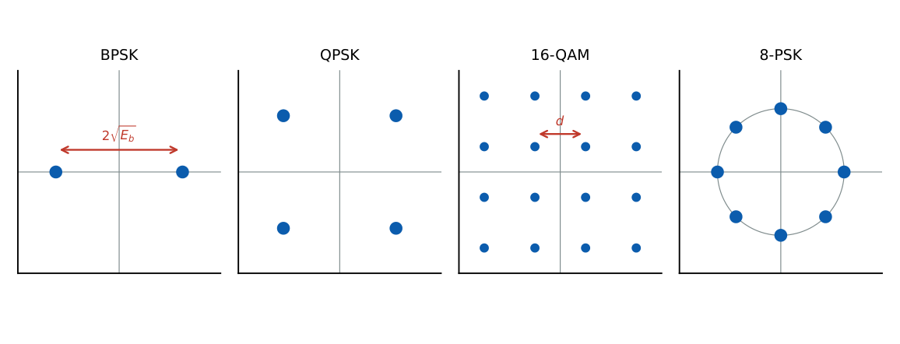
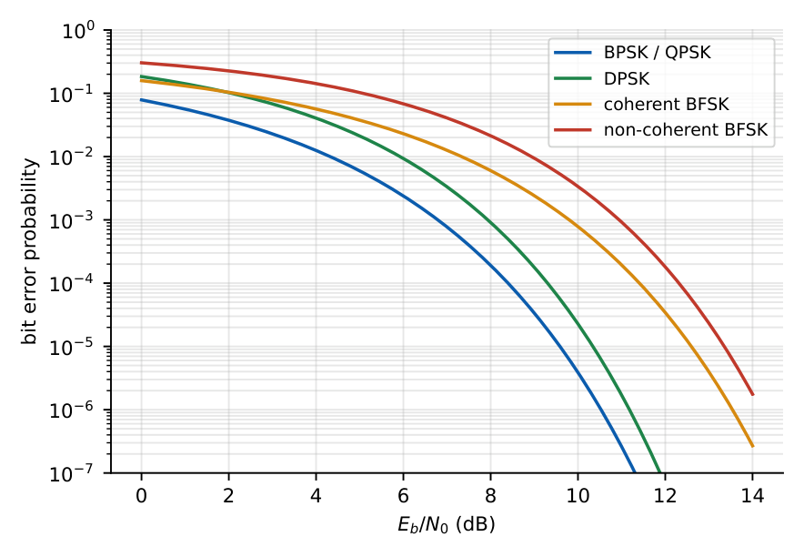

Digital Modulation, Signal Space and Detection in AWGN
In this chapter
Signal-space geometry, ML/MAP detection and decision thresholds, bit-error probabilities of BPSK, QPSK, coherent and non-coherent FSK, DPSK, ASK and M-QAM, bandwidth and spectral efficiency, and the impact of phase error. The \(Q\)-function is used in almost every problem.
8.1 Binary modulation formats
A carrier \(A\cos(2\pi f_ct+\phi)\) has three parameters; digital modulation keys them.
| Format | Waveform for bit 1 / bit 0 | Detection | Null-null bandwidth |
|---|---|---|---|
| ASK / OOK | \(A\cos\omega_ct\) / \(0\) | coherent or envelope | \(2R_b\) |
| BPSK | \(A\cos\omega_ct\) / \(-A\cos\omega_ct\) | coherent | \(2R_b\) |
| BFSK | \(A\cos\omega_1t\) / \(A\cos\omega_2t\) | coherent or non-coherent | \(\approx2R_b+|f_1-f_2|\) |
| DPSK | phase change \(=\) bit | differential (non-coherent) | \(2R_b\) |
Energy per bit \(E_b=\tfrac12A^2T_b\); \(N_0/2\) is the two-sided noise PSD. FSK is orthogonal if the tone spacing is a multiple of \(1/2T_b\) (coherent) or \(1/T_b\) (non-coherent).
8.2 Signal space and optimum detection
Each signal \(s_m(t)\) is represented by a vector \(\mathbf s_m\) in an orthonormal basis \(\{\phi_i(t)\}\) (Gram–Schmidt): \(s_{mi}=\int s_m\phi_i\,dt\), \(E_m=\|\mathbf s_m\|^2\), distance \(d_{mn}=\|\mathbf s_m-\mathbf s_n\|\). In AWGN the received vector is \(\mathbf r=\mathbf s_m+\mathbf n\) with independent components \(n_i\sim\mathcal N(0,N_0/2)\) obtained from correlators or matched filters.
MAP: choose \(m\) maximising \(P_m\,f(\mathbf r|\mathbf s_m)\).
ML (equal priors): choose the signal closest to \(\mathbf r\) (minimum Euclidean distance): decision regions are bounded by perpendicular bisectors.
Binary: threshold for \(\pm\sqrt{E_b}\) (BPSK) with priors \(P_+,P_-\): decide \(+\) if \(r>\dfrac{N_0}{4\sqrt{E_b}}\ln\dfrac{P_-}{P_+}\).
Pairwise error: \(P(m\to n)=Q\!\left(\dfrac{d_{mn}}{\sqrt{2N_0}}\right)\). Union bound: \(P_e\le\sum_{n\ne m}Q\!\left(\dfrac{d_{mn}}{\sqrt{2N_0}}\right)\); the nearest-neighbour term dominates at high SNR.
\(E_b=1\), \(N_0=1\), \(P(+)=0.2\), \(P(-)=0.8\): threshold \(=\tfrac14\ln4=0.347\): the detector requires a larger positive sample to decide “\(+\)” because “\(-\)” is more probable.
8.3 Error probabilities (coherent detection)

BPSK: \(d=2\sqrt{E_b}\), \(\ P_b=Q\!\left(\sqrt{\dfrac{2E_b}{N_0}}\right)\).
QPSK: two orthogonal BPSK streams: \(P_b=Q\!\left(\sqrt{\dfrac{2E_b}{N_0}}\right)\) (same as BPSK), symbol error \(P_s\approx2Q\!\left(\sqrt{\dfrac{2E_b}{N_0}}\right)\); \(E_s=2E_b\).
Coherent BFSK (orthogonal), coherent ASK/OOK: \(P_b=Q\!\left(\sqrt{\dfrac{E_b}{N_0}}\right)\) (3 dB worse than BPSK).
DPSK: \(P_b=\tfrac12e^{-E_b/N_0}\). Non-coherent BFSK: \(P_b=\tfrac12e^{-E_b/2N_0}\).
\(M\)-PSK: \(P_s\approx2Q\!\left(\sqrt{\dfrac{2E_s}{N_0}}\sin\dfrac\pi M\right)\), \(E_s=E_b\log_2M\).
Square \(M\)-QAM: \(P_s\approx4\left(1-\dfrac1{\sqrt M}\right)Q\!\left(\sqrt{\dfrac{3E_s}{(M-1)N_0}}\right)\).
With Gray mapping \(P_b\approx P_s/\log_2M\). Phase error \(\phi\) in coherent BPSK: \(P_b=Q\!\left(\sqrt{\dfrac{2E_b}{N_0}}\cos\phi\right)\).
| \(E_b/N_0=10\) dB | BPSK/QPSK | DPSK | Coh. BFSK | Non-coh. BFSK | 16-QAM (\(P_s\)) |
|---|---|---|---|---|---|
| Error probability | \(3.9\times10^{-6}\) | \(2.3\times10^{-5}\) | \(7.8\times10^{-4}\) | \(3.4\times10^{-3}\) | \(7.0\times10^{-3}\) |

BPSK requires \(E_b/N_0=10.5\) dB for \(P_b=10^{-6}\) and \(9.6\) dB for \(10^{-5}\).
BPSK with \(E_b/N_0=4\) dB \((2.51)\): \(P_b=Q(\sqrt{5.02})=Q(2.24)=0.0125\).
16-QAM, \(E_b/N_0=10\) dB: \(E_s/N_0=4\times10=40\), argument \(\sqrt{3\times40/15}=2.83\), \(Q=2.34\times10^{-3}\), \(P_s\approx4(0.75)(2.34\times10^{-3})=7.0\times10^{-3}\).
BPSK carrier phase error \(30^\circ\) at \(E_b/N_0=10\) dB: \(P_b=Q(\sqrt{20}\cos30^\circ)=5.4\times10^{-5}\), compared with \(3.9\times10^{-6}\) ideal.
8.4 Bandwidth and spectral efficiency
| Scheme | Symbol rate | Null-null bandwidth (\(\approx2R_s\)) | \(R_b/B\) (bit/s/Hz) |
|---|---|---|---|
| BPSK | \(R_b\) | \(2R_b\) | 0.5 |
| QPSK | \(R_b/2\) | \(R_b\) | 1 |
| 8-PSK | \(R_b/3\) | \(2R_b/3\) | 1.5 |
| 16-QAM | \(R_b/4\) | \(R_b/2\) | 2 |
With raised-cosine filtering the bandwidth is \((1+\alpha)R_s\) (bandpass). Increasing \(M\) raises spectral efficiency but requires more \(E_b/N_0\) for the same error rate. Variants: OQPSK (staggered, limits phase jumps to \(90^\circ\)), \(\pi/4\)-QPSK, MSK (continuous-phase FSK with \(h=0.5\), constant envelope, \(\text{BW}_{null}=1.5R_b\)) and GMSK (GSM). OFDM divides the band into orthogonal sub-carriers to combat multipath.
(i) BPSK/QPSK per-bit error uses \(\sqrt{2E_b/N_0}\); FSK/ASK use \(\sqrt{E_b/N_0}\). (ii) Use \(E_b\), not \(E_s\), when comparing schemes at the same bit rate. (iii) QPSK has the same BER as BPSK but half the bandwidth. (iv) Noise variance per dimension is \(N_0/2\), so \(P=Q(d/2\sigma)=Q(d/\sqrt{2N_0})\). (v) MAP and ML differ when priors are unequal.
Compute \(d\) between the closest points; \(P_e\approx N_{nn}\,Q(d/\sqrt{2N_0})\). BPSK: \(d^2=4E_b\). Orthogonal binary: \(d^2=2E_b\). Quick \(Q\) values: \(Q(2)=0.0228\), \(Q(3)=1.35\times10^{-3}\), \(Q(4)=3.2\times10^{-5}\), \(Q(4.75)=10^{-6}\).
8.5 GATE problems
Q1. The BER of coherent BPSK in AWGN is (A) \(Q(\sqrt{E_b/N_0})\) (B) \(Q(\sqrt{2E_b/N_0})\) (C) \(\tfrac12e^{-E_b/N_0}\) (D) \(Q(2E_b/N_0)\).
Q2. Compared with BPSK, coherent orthogonal BFSK needs (A) 3 dB more \(E_b/N_0\) (B) 3 dB less (C) the same (D) 6 dB more, for the same BER.
Q3. The bit error probability of QPSK (Gray coded) is the same as that of (A) BFSK (B) BPSK (C) DPSK (D) 16-QAM.
Q4. For equiprobable symbols, the ML detector in AWGN chooses the signal (A) with largest energy (B) at minimum Euclidean distance from \(\mathbf r\) (C) with largest amplitude (D) at random.
Answers: Q1 (B). Q2 (A). Q3 (B). Q4 (B).
Q5. BPSK at \(E_b/N_0=4\) dB has \(P_b\) approximately (A) 0.0125 (B) 0.0228 (C) 0.159 (D) \(10^{-4}\).
Q6. A BPSK detector has \(E_b=1\), \(N_0=1\), \(P(+)=0.2\), \(P(-)=0.8\). The MAP threshold is (A) 0 (B) 0.347 (C) \(-0.347\) (D) 0.693.
Q7. For DPSK at \(E_b/N_0=10\) dB the bit error probability is (A) \(2.3\times10^{-5}\) (B) \(3.9\times10^{-6}\) (C) \(7.8\times10^{-4}\) (D) \(4.5\times10^{-5}\).
Answers: Q5 (A). Q6 (B). Q7 (A): \(\tfrac12e^{-10}=2.27\times10^{-5}\).
Q8. \(E_s/N_0\) for 16-QAM in terms of \(E_b/N_0=10\) dB: \(E_s/N_0=\) .
Q9. QPSK bandwidth (null-null, kHz) for \(R_b=2\) Mbps (\(B\approx R_b\)): .
Q10. Required \(E_b/N_0\) (dB, one decimal) for BPSK at \(P_b=10^{-6}\): .
Answers: Q8: 40. Q9: 2000. Q10: 10.5.
Q11. Select the correct statements. (A) QPSK doubles spectral efficiency over BPSK. (B) Non-coherent FSK needs no carrier phase recovery. (C) Higher-order QAM needs more \(E_b/N_0\) for the same BER. (D) DPSK performs better than coherent BPSK.
Answers: Q11: (A), (B), (C).
T1. Distance and \(P_b\) for antipodal signals of energy \(E_b\). T2. Why does DPSK lose to BPSK? T3. \(R_s\) of 8-PSK at 3 Mbps.
Answers: T1: \(d=2\sqrt{E_b}\), \(Q(\sqrt{2E_b/N_0})\). T2: noisy phase reference doubles noise in the decision. T3: 1 Msym/s.
- AWGN dimension noise \(N_0/2\); \(P(m\to n)=Q(d/\sqrt{2N_0})\); ML \(=\) nearest signal, MAP adds priors.
- BPSK/QPSK \(Q(\sqrt{2E_b/N_0})\); coherent FSK/ASK \(Q(\sqrt{E_b/N_0})\); DPSK \(\tfrac12e^{-E_b/N_0}\); NC-FSK \(\tfrac12e^{-E_b/2N_0}\).
- \(M\)-PSK, \(M\)-QAM \(P_s\) formulas; \(E_s=E_b\log_2M\); bandwidth \(2R_s\) (null-null), \((1+\alpha)R_s\) with shaping.